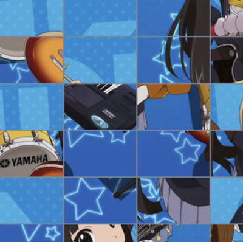
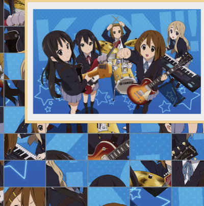
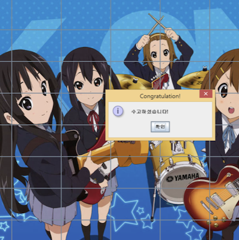
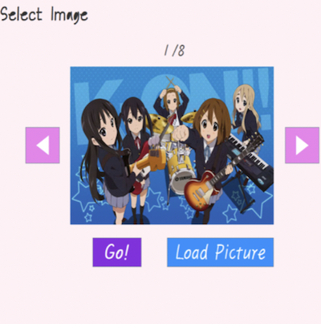

구현 기능
|  |
퍼즐 조각 맞바꾸기 기능 퍼즐 조각 2개를 클릭해서 맞바꾸는 방식으로 게임을 진행합니다. |
|  |
완성 이미지 띄우기 기능 너무 어렵다면 완성 이미지를 보고 게임을 진행할 수 있습니다. |
|  |
퍼즐 완성 판단 기능 퍼즐이 완성되면 ‘수고하셨습니다!’라는 창이 뜹니다. |
|  |
이미지 선택 기능 퍼즐 게임을 진행할 이미지를 선택할 수 있습니다. 그리고 나만의 이미지를 불러와서 게임을 진행할 수도 있습니다. |
사회에 기여하려고 한 점
창의적인 게임을 제작해서 출시하므로 게임을 하면서 색다른 재미를 느낄 수 있습니다.
창의적인 게임을 제작해서 출시하므로 게임을 하면서 색다른 재미를 느낄 수 있습니다.
배경과 목적
창의적인 게임을 만들어서 사람들한테 서비스를 제공하기 위해, 게임 개발자가 될 것에 대비하기 위해 저만의 게임을 제작하게 되었습니다.
창의적인 게임을 만들어서 사람들한테 서비스를 제공하기 위해, 게임 개발자가 될 것에 대비하기 위해 저만의 게임을 제작하게 되었습니다.
배운 점
- Java Swing으로 컴퓨터 프로그램을 구현하는 법을 알게 되었습니다.
진행 절차
- 2학년 2학기 전공과목 ‘객체지향프로그래밍’ 시간에 이미지를 여러 개의 버튼으로 자르는 프로그램을 제공해 주셨습니다. 이것을 2차원 배열에 버튼을 임의로 배치한 후, 버튼 2개를 클릭하면 서로 맞바꾸도록 수정하였습니다.
- 상단 메뉴바의 힌트 버튼을 추가해서 클릭 시 원본 이미지가 보이도록 하였습니다.
- 게임을 시작하기 전 여러 개의 사진 중 하나를 선택하는 기능과 원하는 사진을 불러오는 기능을 구현하였습니다.
- 원하는 사진을 불러올 때 사이즈가 너무 큰 사진은 불러올 때 오류가 납니다. 그래서 이미지를 불러올 때 사이즈를 맞춰주는 기능을 추가하였습니다.
- 마지막으로 게임 시작 화면을 구현하였습니다.
- 이렇게 해서 원하는 프로그램을 구현할 수 있었습니다.
역량 강화를 위해 가장 노력한 점
Java Swing으로 구현된 기존 프로그램 분석 및 창의적인 게임으로 재구현
Java Swing으로 구현된 기존 프로그램 분석 및 창의적인 게임으로 재구현
전체 구조

사용 기술
Java
Java
개발 환경
Eclipse IDE
Eclipse IDE